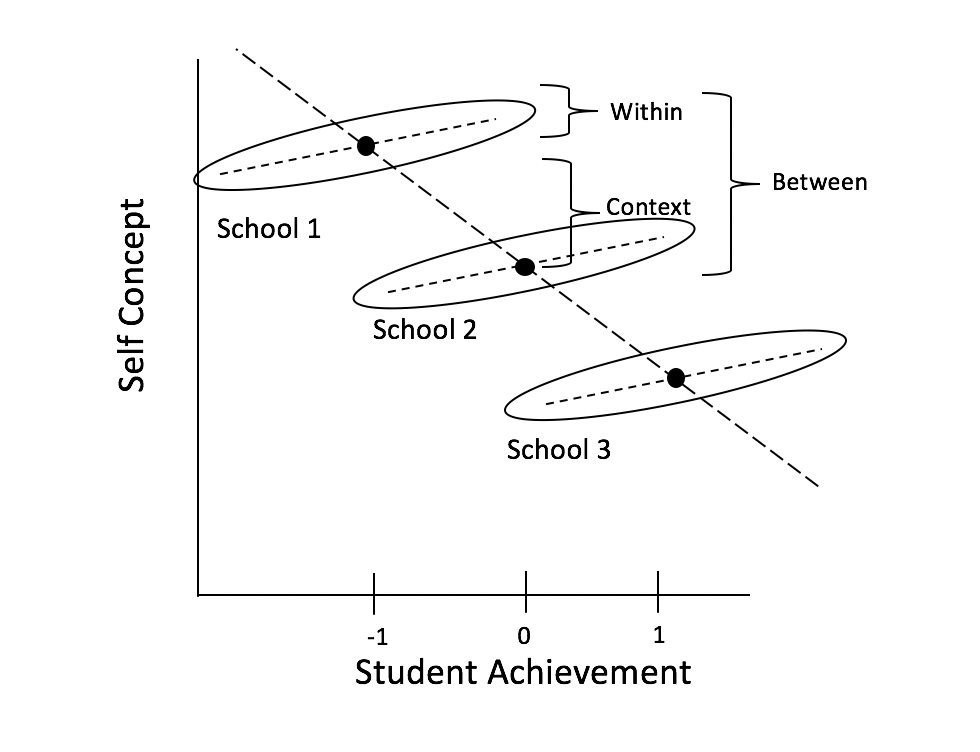
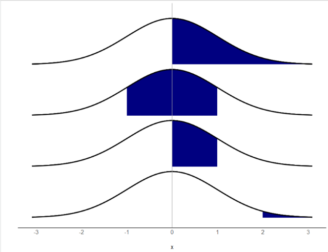
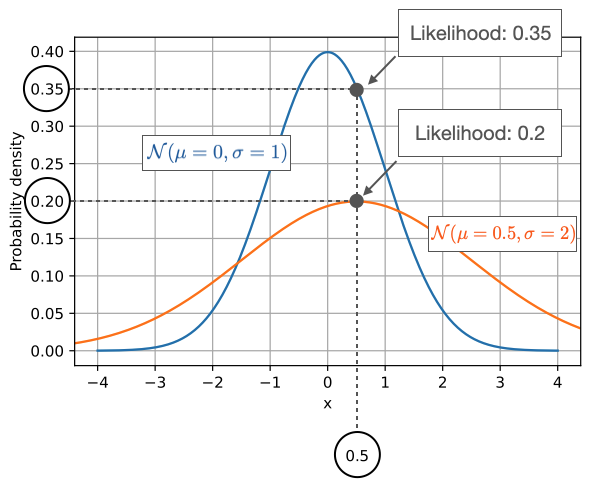
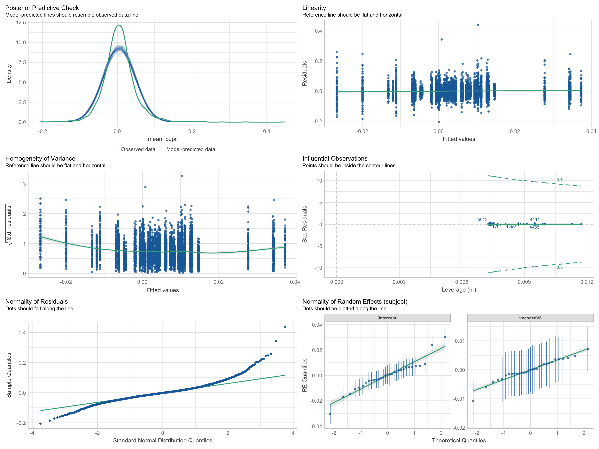

library(tidyverse) # data wrangling
library(knitr) # nice tables
library(lme4) # fit mixed models
library(lmerTest) # mixed models
library(broom.mixed) # tidy output of mixed models
library(afex) # fit mixed models for lrt test
library(emmeans) # marginal means
library(ggeffects) # marginal means
library(ggrain) # rain plots
library(easystats) # nice ecosystem of packages
options(scipen=999) # get rid of sci notationMultilevel Modeing (with R) Part 2
Princeton University
Jason Geller, PH.D.(he/him)
2024-02-04
Multilevel models
When to use them:
Nested designs
Repeated measures
Longitudinal data
Complex designs
Why use them:
- Captures variance occurring between groups and within groups
What they are:
- Linear model with extra residuals
Today
Everything you need to know to run and report a MLM
- Organizing data for MLM analysis
- Estimation
- Fit and interpret multilevel models
- Visualizion
- Effect size
- Reporting
- Power
Packages
Today’s data
What did you say?
- Ps (N = 31) listened to both clear (NS) and 6 channel vocoded speech (V6)
- (https://www.mrc-cbu.cam.ac.uk/personal/matt.davis/vocode/a1_6.wav)
- Fixed factor: ?
- Random factor: ?
- (https://www.mrc-cbu.cam.ac.uk/personal/matt.davis/vocode/a1_6.wav)
- Ps (N = 31) listened to both clear (NS) and 6 channel vocoded speech (V6)
Today’s data

Data organization
Data Structure
- MLM analysis (in R) requires data in long format
Data organization
Level 1: trial
Level 2: subject
| subject | trial | vocoded | mean_pupil |
|---|---|---|---|
| EYE15 | 3 | V6 | 0.0839555 |
| EYE15 | 4 | V6 | 0.0141083 |
| EYE15 | 5 | V6 | 0.0224967 |
| EYE15 | 6 | V6 | 0.0007424 |
| EYE15 | 7 | V6 | 0.0242540 |
| EYE15 | 8 | V6 | 0.0267617 |
Centering
In a single-level regression, centering ensures that the zero value for each predictor is meaningful before running the model
In MLM, if you have specific questions about within, between, and contextual effects, you need to center!

Group- vs. Grand-Mean Centering
Grand-mean centering: \(x_{ij} - x\)
- Variable represents each observation’s deviation from everyone’s norm, regardless of group
Group-mean centering: \(x_{ij} - x_j\)
- Variable represents each observation’s deviation from their group’s norm (removes group effect)
Group- vs. Grand-Mean Centering
Level 1 predictors
Grand-mean centering
- Include means of level 2
- Allows us to directly test within-group effect
- Coefficient associated with the Level 2 group mean represents contextual effect
- Include means of level 2
Group-mean centering
- Level 1 coefficient will always be with within-group effect, regardless of whether the group means are included at Level 2 or not
- If level 2 means included, coefficient represents the between-groups effect
Note
Can apply to categorical predictors as well (see Yaremych, Preacher, & Hedeker, 2023)
Centering in R
# how to group mean center
d <- d %>%
# Grand mean centering (CMC)
mutate(iv.gmc = iv-mean(iv)) %>%
# group mean centering (more generally, centering within cluster)
group_by(id) %>%
mutate(iv.cm = mean(iv),
iv.cwc = iv-iv.cm)
library(datawizard) #easystats
#data wizard way
x <- demean(x, select=c("x"), group="ID") #gets within-group and included cluster meansModel Estimation
Maximum Likelihood
In MLM we try to maximize the likelihood of the data
- No OLS!
Probability vs. Likelihood
- Probability
If I assume a distribution with certain parameters (fixed), what is the probability I see a particular value in the data?
Pr(𝑦>0│𝜇=0,𝜎=1)=.50
Pr(−1<𝑦<1│𝜇=0,𝜎=1)=.68
Pr(0<𝑦<1│𝜇=0,𝜎=1)=.34
Pr(𝑦>2│𝜇=0,𝜎=1)=.02

Likelihood
\(L(𝜇,𝜎│𝑥)\)
Holding a sample of data constant, which parameter values are more likely?
- Which values have higher likelihood?
Here data is fixed and distribution can change

Likelihood

Likelihood

Likelihood

Likelihood

Likelihood

Likelihood
Interactive: Understanding Maximum Likelihood Estimation: https://rpsychologist.com/likelihood/
Log likelihood
With large samples, likelihood values ℒ(𝜇,𝜎│𝑥) get very small very fast
- To make them easier to work with, we usually work with the log-likelihood
- Measure of how well the model fits the data
- Higher values of \(\log L\) are better
- To make them easier to work with, we usually work with the log-likelihood
Deviance = \(-2logL\)
- \(-2logL\) follows a \(\chi^2\) distribution with \(n (\text{sample size}) - p (\text{paramters}) - 1\) degrees of freedom
\(\chi^2\) distribution

Comparing nested models
Suppose there are two models:
- Reduced model includes predictors \(x_1, \ldots, x_q\)
- Full model includes predictors \(x_1, \ldots, x_q, x_{q+1}, \ldots, x_p\)
We want to test the hypotheses:
\(H_0\): smaller model is better
\(H_1\): Larger model is better
To do so, we will use the drop-in-deviance test (also known as the nested likelihood ratio test)
Drop-In-Deviance Test
Hypotheses:
\(H_0\): smaller model is better
\(H_1\): Larger model is better
Test Statistic: \[G = (-2 \log L_{reduced}) - (-2 \log L_{full})\]
P-value: \(P(\chi^2 > G)\):
- Calculated using a \(\chi^2\) distribution
- df = \(df_1\) - \(df_2\)
Testing deviance
We can use the
anovafunction to conduct this test- Add test = “Chisq” to conduct the drop-in-deviance test
I like
test_likelihoodratiofromeasystats
Model fitting: ML or REML?
Two flavors of maximum likelihood
Maximum Likelihood (ML or FIML)
Jointly estimate the fixed effects and variance components using all the sample data
Can be used to draw conclusions about fixed and random effects
Issue:
- Results are biased because fixed effects are estimated without error
Model fitting: ML or REML
Restricted Maximum Likelihood (REML)
Estimates the variance components using the sample residuals not the sample data
It is conditional on the fixed effects, so it accounts for uncertainty in fixed effects estimates
- This results in unbiased estimates of variance components
- Associated with error/penalty
Model fitting: ML or REML?
Research has not determined one method absolutely superior to the other
REML (
REML = TRUE; default inlmer) is preferable when:The number of parameters is large
Primary objective is to obtain relaible estimates of the variance parameters
For REML, likelihood ratio tests can only be used to draw conclusions about variance components
ML (
REML = FALSE) must be used if you want to compare nested fixed effects models using a likelihood ratio test (e.g., a drop-in-deviance test)
ML or REML?
- What would we use if we wanted to compare the below models?
ML or REML?
- What would we use if we wanted to compare the below models?
Fitting and Interpreting Models
Modeling approach
- Forward/backward approach
Keep it maximal1Whatever can vary, should vary
- Decreases Type 1 error
Modeling approach
Full (maximal) model
- Only when there is convergence issues should you remove terms
- if non-convergence (pay attention to warning messages in summary output!):
- Try different optimizer (
afex::all_fit())- Sort out random effects
- Remove correlations between slopes and intercepts
- Random slopes
- Random Intercepts
- Sort out fixed effects (e.g., interaction)
- Once you arrive at the final model present it using REML estimation
- Sort out random effects
- Try different optimizer (
- if non-convergence (pay attention to warning messages in summary output!):
- Only when there is convergence issues should you remove terms
Modeling approach
If your model is singular (check output!!!!)
- Variance might be close to 0
- Perfect correlations (1 or -1)
Drop the parameter!
Modeling approach
data <- read.csv("https://raw.githubusercontent.com/jgeller112/PSY504-Advanced-Stats-S24/main/slides/02-MLM/data/heck2011.csv")
summary(lmer(math~ses + (1+ses|schcode), data=data))Linear mixed model fit by REML. t-tests use Satterthwaite's method [
lmerModLmerTest]
Formula: math ~ ses + (1 + ses | schcode)
Data: data
REML criterion at convergence: 48190.1
Scaled residuals:
Min 1Q Median 3Q Max
-3.8578 -0.5553 0.1290 0.6437 5.7098
Random effects:
Groups Name Variance Std.Dev. Corr
schcode (Intercept) 3.2042 1.7900
ses 0.7794 0.8828 -1.00
Residual 62.5855 7.9111
Number of obs: 6871, groups: schcode, 419
Fixed effects:
Estimate Std. Error df t value Pr(>|t|)
(Intercept) 57.6959 0.1315 378.6378 438.78 <0.0000000000000002 ***
ses 3.9602 0.1408 1450.7730 28.12 <0.0000000000000002 ***
---
Signif. codes: 0 '***' 0.001 '**' 0.01 '*' 0.05 '.' 0.1 ' ' 1
Correlation of Fixed Effects:
(Intr)
ses -0.284
optimizer (nloptwrap) convergence code: 0 (OK)
boundary (singular) fit: see help('isSingular')Null model (unconditional means)
Get ICC
- ICC is a standardized way of expressing how much variance is due to clustering/group
- Ranges from 0-1
- Can also be interpreted as correlation among observations within cluster/group!
- If ICC is sufficiently low (i.e., \(\rho\) < .1), then you don’t have to use MLM! BUT YOU PROBABLY SHOULD 🙂
Null model (unconditional means)
library(lme4) # pop linear modeling package
null_model <- lmer(mean_pupil ~ (1|subject), data = eye, REML=TRUE)
summary(null_model)Linear mixed model fit by REML. t-tests use Satterthwaite's method [
lmerModLmerTest]
Formula: mean_pupil ~ (1 | subject)
Data: eye
REML criterion at convergence: -19811.6
Scaled residuals:
Min 1Q Median 3Q Max
-5.1411 -0.5530 -0.0463 0.4822 10.8130
Random effects:
Groups Name Variance Std.Dev.
subject (Intercept) 0.0001303 0.01142
Residual 0.0016840 0.04104
Number of obs: 5609, groups: subject, 31
Fixed effects:
Estimate Std. Error df t value Pr(>|t|)
(Intercept) 0.005227 0.002124 29.457784 2.461 0.0199 *
---
Signif. codes: 0 '***' 0.001 '**' 0.01 '*' 0.05 '.' 0.1 ' ' 1Calculating ICC
Run baseline (null) model
Get intercept variance and residual variance
\[\mathrm{ICC}=\frac{\text { between-group variability }}{\text { between-group variability+within-group variability}}\]
\[ ICC=\frac{\operatorname{Var}\left(u_{0 j}\right)}{\operatorname{Var}\left(u_{0 j}\right)+\operatorname{Var}\left(e_{i j}\right)}=\frac{\tau_{00}}{\tau_{00}+\sigma^{2}} \]
Maximal model: Fixed effect random intercepts (subject) and slopes (vocoded) model
Linear mixed model fit by REML. t-tests use Satterthwaite's method [
lmerModLmerTest]
Formula: mean_pupil ~ vocoded + (1 + vocoded | subject)
Data: eye
REML criterion at convergence: -19813.7
Scaled residuals:
Min 1Q Median 3Q Max
-5.0296 -0.5509 -0.0467 0.4810 10.7164
Random effects:
Groups Name Variance Std.Dev. Corr
subject (Intercept) 0.00013592 0.011658
vocodedV6 0.00002816 0.005307 -0.19
Residual 0.00167497 0.040926
Number of obs: 5609, groups: subject, 31
Fixed effects:
Estimate Std. Error df t value Pr(>|t|)
(Intercept) 0.003643 0.002235 28.852288 1.63 0.1140
vocodedV6 0.003124 0.001453 30.471988 2.15 0.0396 *
---
Signif. codes: 0 '***' 0.001 '**' 0.01 '*' 0.05 '.' 0.1 ' ' 1
Correlation of Fixed Effects:
(Intr)
vocodedV6 -0.306Fixed effects
- Interpretation same as lm
Linear mixed model fit by REML. t-tests use Satterthwaite's method [
lmerModLmerTest]
Formula: mean_pupil ~ vocoded + (1 + vocoded | subject)
Data: eye
REML criterion at convergence: -19813.7
Scaled residuals:
Min 1Q Median 3Q Max
-5.0296 -0.5509 -0.0467 0.4810 10.7164
Random effects:
Groups Name Variance Std.Dev. Corr
subject (Intercept) 0.00013592 0.011658
vocodedV6 0.00002816 0.005307 -0.19
Residual 0.00167497 0.040926
Number of obs: 5609, groups: subject, 31
Fixed effects:
Estimate Std. Error df t value Pr(>|t|)
(Intercept) 0.003643 0.002235 28.852288 1.63 0.1140
vocodedV6 0.003124 0.001453 30.471988 2.15 0.0396 *
---
Signif. codes: 0 '***' 0.001 '**' 0.01 '*' 0.05 '.' 0.1 ' ' 1
Correlation of Fixed Effects:
(Intr)
vocodedV6 -0.306Degrees of freedom and p-values
Degrees of freedom (denominator) can be assessed with several methods:
Satterthwaite (default when install
lmerTestand then runlmer)Asymptotic (Inf) (default behavior lme4)
Kenward-Rogers
Random effects/variance components
Tells us how much variability there is around the fixed intercept/slope
- How much does the average pupil size change between participants
Linear mixed model fit by REML. t-tests use Satterthwaite's method [
lmerModLmerTest]
Formula: mean_pupil ~ vocoded + (1 + vocoded | subject)
Data: eye
REML criterion at convergence: -19813.7
Scaled residuals:
Min 1Q Median 3Q Max
-5.0296 -0.5509 -0.0467 0.4810 10.7164
Random effects:
Groups Name Variance Std.Dev. Corr
subject (Intercept) 0.00013592 0.011658
vocodedV6 0.00002816 0.005307 -0.19
Residual 0.00167497 0.040926
Number of obs: 5609, groups: subject, 31
Fixed effects:
Estimate Std. Error df t value Pr(>|t|)
(Intercept) 0.003643 0.002235 28.852288 1.63 0.1140
vocodedV6 0.003124 0.001453 30.471988 2.15 0.0396 *
---
Signif. codes: 0 '***' 0.001 '**' 0.01 '*' 0.05 '.' 0.1 ' ' 1
Correlation of Fixed Effects:
(Intr)
vocodedV6 -0.306Random effects/variance components
Correlation between random intercepts and slopes
Negative correlation
- Higher intercept (for normal speech) less of effect (lower slope)
Visualize Random Effects

Model comparisons
Can compare models using
anovafunction ortest_likelihoodratiofromeasystats- Will be refit using ML if interested in fixed effects
AIC/BIC
- LRT requires nested models
AIC
- AIC:
\[ D + 2p \]
where d = deviance and p = # of parameters in model
Can compare AICs1:
\[ \Delta_i = AIC_{i} - AIC_{min} \]
Less than 2: More parsimonious model is preferred
Between 4 and 7: some evidence for lower AIC model
Greater than 10,: strong evidence for lower AIC
BIC
- BIC:
\[ D + ln(n)*p \]
where d = deviance, p = # of parameters in model, n = sample size
Change in BIC:
\(\Delta{BIC}\) <= 2 (No difference)
\(\Delta{BIC}\) > 3 (evidence for smaller BIC model)
AIC/BIC
Hypothesis testing
Multiple options
- t/F tests with approximate degrees of freedom (Kenward-Rogers or Satterwaithe)
- Parametric bootstrap
- Likelihood ratio test (LRT)
- Can be interpreted as main effects and interactions
- Use
afexpackage to do that
Hypothesis testing - afex
Using emmeans
- Get means and contrasts
library(emmeans) # get marginal means
emmeans(max_model, specs = "vocoded") %>%
kable() # grabs means/SEs for each level of vocode | vocoded | emmean | SE | df | asymp.LCL | asymp.UCL |
|---|---|---|---|---|---|
| NS | 0.0036427 | 0.0022348 | Inf | -0.0007374 | 0.0080229 |
| V6 | 0.0067668 | 0.0022618 | Inf | 0.0023337 | 0.0111999 |
| contrast | estimate | SE | df | asymp.LCL | asymp.UCL |
|---|---|---|---|---|---|
| NS - V6 | -0.0031241 | 0.0014532 | Inf | -0.0059723 | -0.0002759 |
Assumptions
Check assumptions
Linearity
Normality
Level 1 residuals are normally distributed around zero
Level 2 residuals are multivariate-normal with a mean of zero
Homoskedacticity
- Level 1 residual variance is homoskedastic both within- and between-groups
Collinearity
Outliers
Assumptions
Visualization

ggeffects

Effect size
- Report pseudo-\(R^2\) for marginal (fixed) and conditional model (full model) (Nakagawa et al. 2017)
\[ R^2_{LMM(c)} = \frac{\sigma_f^2\text{fixed} + \sigma_a^2\text{random}}{\sigma_f^2\text{fixed} + \sigma_a^2\text{random} + \sigma_e^2\text{residual}} \]
\[ R^2_{\text{LMM}(m)} = \frac{\sigma_f^2\text{fixed}}{\sigma_f^2\text{fixed} + \sigma_a^2\text{random} + \sigma_e^2\text{residual}} \]
- Report semi-partial \(R^2\) for each predictor variable
- \(R^2_\beta\)
partR2package in R does this for you
- \(R^2_\beta\)
Effect size
# R2 for Mixed Models
Conditional R2: 0.077
Marginal R2: 0.001Effect size
- Cohen’s \(d\) for treatment effects/categorical predictions1
\[ d = \frac{\text{Effect}}{\sqrt{\sigma^2_\text{Intercept} + \sigma^2_\text{slope} + \sigma^2_\text{residual}}} \]
contrast effect.size SE df asymp.LCL asymp.UCL
NS - V6 -0.0781 0.0377 Inf -0.152 -0.00421
sigma used for effect sizes: 0.04
Degrees-of-freedom method: inherited from asymptotic when re-gridding
Confidence level used: 0.95 Reporting Results
Describing a MLM analysis
Structure
What was the nested data structure (e.g., how many levels; what were the units at each level?)
• How many units were in each level, on average?
• What was the range of the number of lower-level units in each group/cluster?
Describing a MLM analysis
What equation can best represent your model?
What estimation method was used (e.g., ML, REML)?
If there were convergence issues, how was this addressed?
What software (and version) was used (when using R, what packages as well)?
If degrees of freedom were used, what kind?
What type of models were estimated (i.e., unconditional, random intercept, random slope, max)?
What variables were centered and what kind of centering was used?
What model assumptions were checked and what were the results?
Reporting Results
What was the ICC of the outcome variable?
Are fixed effects and variance components reported?
What inferential statistics were used (e.g., t-statistics, LRTs)?
How precise were the results (report the standard errors and/or confidence intervals)?
Were model comparisons performed (e.g., AIC, BIC, if using an LRT,report the χ2, degrees of freedom, and p value)?
Were effect sizes reported (e.g., Cohen’s d, pseudo-R2?
What kind of pseudo-R2 were reported?
Write-up
We fitted a linear mixed model (estimated using REML and nloptwrap optimizer) to predict mean_pupil with vocoded (formula: mean_pupil ~ vocoded). The model included vocoded as random effects (formula: ~1 + vocoded | subject). The model’s total explanatory power is weak (conditional R2 = 0.08) and the part related to the fixed effects alone (marginal R2) is of 1.34e-03. The model’s intercept, corresponding to vocoded = NS, is at 3.64e-03 (95% CI [-7.38e-04, 8.02e-03], t(5603) = 1.63, p = 0.103). Within this model:
- The effect of vocoded [V6] is statistically significant and positive (beta = 3.12e-03, 95% CI [2.75e-04, 5.97e-03], t(5603) = 2.15, p = 0.032; Std. beta = 0.07, 95% CI [6.49e-03, 0.14])
Standardized parameters were obtained by fitting the model on a standardized version of the dataset. 95% Confidence Intervals (CIs) and p-values were computed using a Wald t-distribution approximation.
Table
modelsummary::modelsummary(list("max model" = max_model), output="kableExtra") # modelsummary package| max model | |
|---|---|
| (Intercept) | 0.004 |
| (0.002) | |
| vocodedV6 | 0.003 |
| (0.001) | |
| SD (Intercept subject) | 0.012 |
| SD (vocodedV6 subject) | 0.005 |
| Cor (Intercept~vocodedV6 subject) | −0.195 |
| SD (Observations) | 0.041 |
| Num.Obs. | 5609 |
| R2 Marg. | 0.001 |
| R2 Cond. | 0.077 |
| AIC | −19801.7 |
| BIC | −19761.9 |
| ICC | 0.1 |
| RMSE | 0.04 |
Power
Simulation-based power analyses
Simulate new data
Use pilot data (what I would do)
mixedpower(https://link.springer.com/article/10.3758/s13428-021-01546-0)simr(https://besjournals.onlinelibrary.wiley.com/doi/full/10.1111/2041-210X.12504)
PSY 504: Advaced Statistics